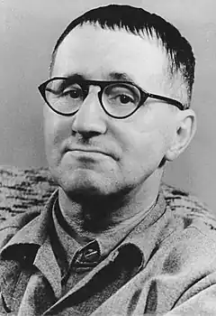

Його спалювали дві пристрасті – театр і жінки. Навколо нього завжди було безліч дам – різних за характером, емоційним складом та зовнішнім виглядом. Навіть у зрілому віці він користувався успіхом у молодих представниць прекрасної статі. Чим же залучав жінок цей чоловік, аж ніяк не красень, худорлявий астенік з довгим носом, тонкими губами і глибоко посадженими очима за скельцями простецький очок?
Улюблені Бертольта Брехта.
"Прославлений німецький драматург і реформатор сцени <…>, – пише Юрій Оклянскій у книзі "Гарем Бертольта Брехта", – був маркузианцем, свого роду попередником сексуальної революції… Подруг було багато, але, крім них, майже завжди було кілька жінок, з якими Брехт жив сімейно. Він тяжів до полігамії". Вже в юнацькому щоденнику Брехт приділяв багато уваги опису проведення часу з ровесницею з рідного міста Аугсбурга, дочкою місцевого лікаря Паулою Банхольцер, якій він дав жартівливе прізвисько Бі. Разом з Бі він блукав по місту в пошуках розваг. Мрійлива натура і багата фантазія стимулювали його творчі устремління, пройняті бунтарським почуттями. Він складав вірші, в яких висміював лицемірство багатих і прославляв чесну бідність. Писав статті і виконував під гітару пісні власного твору, захоплюючи компанію гімназійних однокласників. У липні 1919 року подруга Бі, сховавшись в заміському будинку своїх батьків, народила Брехту сина. Дізнавшись про подію, батько Брехта, директор паперової фабрики, спочатку розлютився, проте незабаром змінив гнів на милість. Тим не менш позашлюбного онука не взяли в будинок – віддали на виховання в хороші руки. Цікаво, що Бі залишилася ніжним і надійним другом Брехта на багато років. У 80-х вийшла її книга "Мій час з Бертом Брехтом", сторінки якої дихають невмирущої любов'ю… У 1922 році Брехт пише п'єсу "Барабани в ночі", що принесла йому популярність і славу. Після успіху п'єси автор злегка змінив ім'я – з Бертольда став Бертольтом. Те ж саме зробив його кращий і преданнейший друг, драматург Арнольд Броннен – назвався Арнольтом. Вони вважали, що так буде милозвучніше. Бертольт обрав постійний імідж – окуляри в нікельованої оправі і шкіряна кепка. 24-річний драматург відчував себе "тигром міських джунглів", періодично виходять на полювання. Дичиною були, зрозуміло, жінки… У 1920 році, коли Брехт ще з'являвся всюди разом з Бі, він уже завів нові зв'язки. Маріанна Цофф була оперною співачкою Мюнхенського театру. Поступившись ненависної "буржуазної моралі", Брехт у листопаді 1922 року одружився на ній. Через чотири місяці після весілля народилася дочка. Однак шлюб виявився недовгим – протримався менше року. Восени 1923 роки в Берліні Арнольт Броннен познайомив Брехта з починаючої актрисою Оленою Вайґель (близькі звали її Хеллі). Через рік з'явився син Стефан, а ще через п'ять років вони одружилися. Зроблено це було під тиском Хеллі. Спочатку на всі прохання офіційно оформити стосунки Брехт відповідав відмовою. – Зрозумій, Хеллі, – переконував він, – я ж сам сто разів друковано і усно заявляв, що шлюб – це забобон! Що сексуальні відносини повинні бути вільними і що я сам більше ніколи не одружуся! Але в один із днів почув: – Я більше не хочу складатися покоївки при знаменитості. Вирішуй. Або я заберу дитину і поїду до батьків. Брехт довго сидів мовчки. Потім закурив сигару і сказав: – Добре. Я зроблю по-твоєму. Але запам'ятай: для мене це – порожня формальність. Вона нічого не змінить у наших відносинах. І взагалі нічого не змінить. Те, що виглядало в очах Брехта порожньою формальністю, на близьких йому жінок подіяло як удар батогом. Спробувала покінчити з собою Елізабет Гауптман – письменниця, співробітниця і подруга Брехта. Вона зіграла величезну роль у написанні "Тригрошової опери", відразу ж зробила Брехта світовою знаменитістю. Елізабет прийняла надмірну дозу снодійного, і лише завдяки щасливому випадку її вдалося врятувати. Без пояснень зібрала речі і поїхала з Берліна Марілуїза Фляйсер – одна з найближчих подруг Брехта. Він поїхав до неї на квартиру. "Фрейлейн Фляйсер тут більше не живе, – сказали йому. – Записка? Ні, вона нічого не залишила". Актрису Каролу Неєр Брехт кликав "Жінка-Персик". Він із затаєним острахом чекав на її повернення з гастрольного турне, не знаючи, як вона поставиться до його одруження на Єлену Вайгель. Карола вийшла з вагона. Брехт простягнув їй букет червоних троянд. – Я хочу тобі дещо повідомити, – сказав він. – Я змушений був терміново одружитися на Хеллі Вайґель. Але це нічого не значить… Карола кілька секунд стояла наче в тумані. Потім очі його звузилися в щілинки. – Це значить от що! – вона розмахнулася і сильно хлестнула його букетом по щоці. – Та ось що! Удар по іншій щоці. І ще двічі – для пам'яті. Шпурнувши троянди на землю, вона повернулася і побігла геть. Вони зустрілися і помирилися тільки через кілька років – у Москві. Далі в калейдоскопі брехтівських увлечень з'явилася Маргарет Штеффін, Грета. Тендітна білява жінка з шовковистим волоссям і синіми мрійливими очима була чарівно приваблива. Вона могла б підкорити безліч сердець. Але її притягувало інше. Дочка муляра з берлінської околиці, Грета дівчиною-підлітком брала участь у лівому молодіжному русі. Потім вступила до Комуністичної партії Німеччини. Маргарет була людиною величезної обдарованості. Вона володіла російською, англійською, французькою, датською, шведською та норвезькою мовами. Листи до Брехту вона завершувала ланцюжком слів "люблю" на всіх цих мовах. В останній рік життя вивчила фінська. Грета стала для Брехта його Музою – як Ліля Брік для Маяковського. Такі широко відомі речі Брехта, як "Добрий чоловік із Сезуана", "Матуся Кураж та її діти", "Кар'єра Артуро Уї", навряд чи були б написані, якби поруч не було Грети Штеффін. Але в 30-х роках, в пору тісної співпраці і близькості з Маргарет, "любовний крейдяне коло" Брехта увійшла датська письменниця і актриса Рут Берлау. Брехт приїхав у Данію, рятуючись від гітлерівського режиму. 27-річна Рут, дружина старого професора-медика (різниця у віці складала 20 років), була керівником єдиного в Данії робітничого театру, переконаною комуністкою і притому вельми емоційною вдачею. Природно, що незабаром Брехт і Рут стали більше, ніж друзями. І тут в Данію зібралася Грета – відвідати Брехта на різдвяні свята. Брехт був не проти, але відбив Грете телеграму, що її зустріне в Копенгагені письменниця і актриса Рут Берлау. Рут в свою чергу отримала телеграму: "будь Ласка, зустрінь співробітницю Маргарет Штеффін. Брехт". Розставивши фігури на дошці своїх любовних пристрастей, Брехт зник з поля їх зору. Він окопався в нещодавно купленому будиночку поблизу рибальського селища Сковсбостранд на датському острові Фюн і звідти стежив за ходом партії. Вона спочатку проходила мирно. Рут, якої ім'я Штеффін нічого не говорило, зустріла її на вокзалі і відвезла до себе, в простору професорську квартиру. Грете довелося прожити там три місяці – Брехт, якого вона писала і дзвонила, відповідав невиразно і не з'являвся. Під Різдво Грета не витримала і відкрилася новій подрузі. "Я люблю Біді, – повідомила вона. – Готова для нього на все". Для Рут це стало потрясінням, але вона промовчала про власне ставлення до Брехтом. А Грету через три місяці в Сковсбостранде чекало ще більше потрясіння: як-то вона зовсім випадково "застукала" Брехта і Рут у відомий момент. Брехту довелося потрудитися, щоб примирити своїх коханих. Потім вони навіть подружилися… А що Єлена Вайгель? Вона теж була весь час з Брехтом. Перед приїздом Грети в Данію ще раз спробувала відстояти одноосібне право на чоловіка – аргументами були діти. Але не вдалося. Увійшла в життя Брехта і фінська письменниця Хелла Вуолійокі. Вона займалася літературознавством і публіцистикою, була музикальна, володіла сімома іноземними мовами, плідно працювала як драматург. А крім того, виявилася вдалою підприємницею, багатою поміщицею і відомим політиком – її одного разу брав у Лондоні сам Черчілль. Але це не все. Хелла була ще та законспірованим агентом радянської розвідки. У 1943 році її заарештували і засудили до смертної кари за шпигунство на користь СРСР, але згодом завдяки зусиллям світової громадськості вона вийшла на свободу. До неї за запрошення і приїхав до Фінляндії на початку 1940 року Брехт з усім своїм "сімейним колом", включаючи Маргарет Штеффін і Рут Берлау. Літній сезон компанія провела на розкішній віллі Хеллі. Останній коханої Бертольта Брехта, вже в середині 50-х років, коли він, всесвітньо відомий драматург, очолив власний театр "Берлінер ансамбль", стала Ізот Кіліан, яка працювала з ним в ролі помічника і секретаря. Однак незабаром вона піднесла сюрприз – захопилася молодим польським режисером, стажувався в театрі Брехта. Метр прочитав у її щоденнику: "Твій час минув. Цей юний поляк… спокусливим і солодше для грішної молодий Єви, ніж весь підлеглий тобі "Берлінер ансамбль", вся твоя світова слава і рипучі мудрість". Бертольт Брехт, п'єси якого за кількістю постановок поступаються хіба що мольеровским і шекспірівським, помер у 1956 році від інфаркту. Ім'я великого художника і епікурейця вписано не тільки в історію світової драматургії. Він залишився єдиним у своєму роді людиною, якій вдалося побудувати унікальний полігамний світ людських відносин і мирно прожити в ньому до кінця, не сумніваючись у його природності.